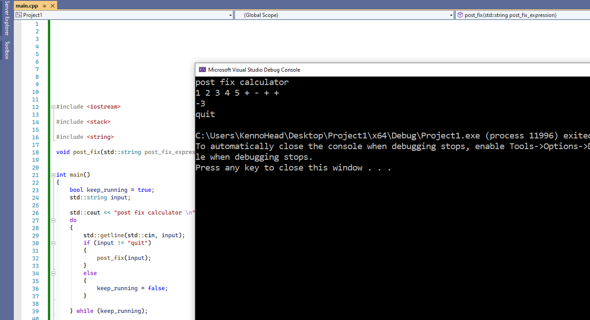

You're probably wondering why I wrote this. I came across a person on Discord
who had a friend that needed help writing a post fix calculator program for a C++ class.
My motivation to help that person's friend (a complete stranger to me too) was that the
person seemed nice enough to spend time asking for help for her friend. At the time I
heard that those involved were desperate enough to rely on Chegg. I personally view Chegg
as a rip-off (from personal experience). I remembered I did a similar program for my data
structures class back in 2016. Curiousity got the best of me, so I took a look at the answer
that was posted on Chegg. I was kind of disappointed that the answer is not a working
answer. The hint was that the answer on Chegg used a linked list, and it did not handle the
test cases the program was supposed to handle. I cranked out a working answer, which is this
program here. I don't have anything against Chegg, since everyone will at some point get
desperate enough to get an answer from somewhere else if they couldn't solve it. It's just
my opinion that Chegg is pretty bad if they sell answers that don't work.